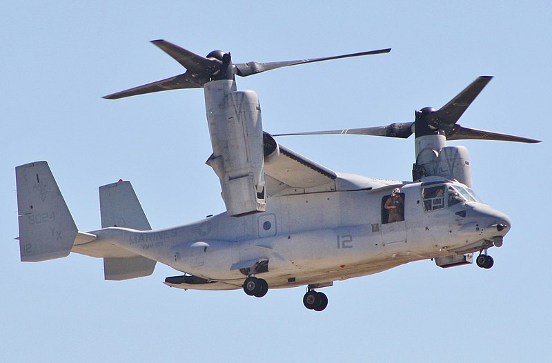

V-22 Osprey
Bell Boeing V-22 Osprey

Amerykański wielozadaniowy zmiennowirnikowiec pionowego i/lub krótkiego startu i lądowania.
Osprey (rybołów) jest pierwszym produkowanym seryjnie statkiem powietrznym z obracanym układem napędowym z wirnikami o średnicy 12 metrów umocowanymi wraz z silnikami i układami przeniesienia napędu w gondolach na końcówkach skrzydeł.
Maszyna ta startuje i ląduje jak śmigłowiec, kiedy gondole z silnikami
Strona wiki